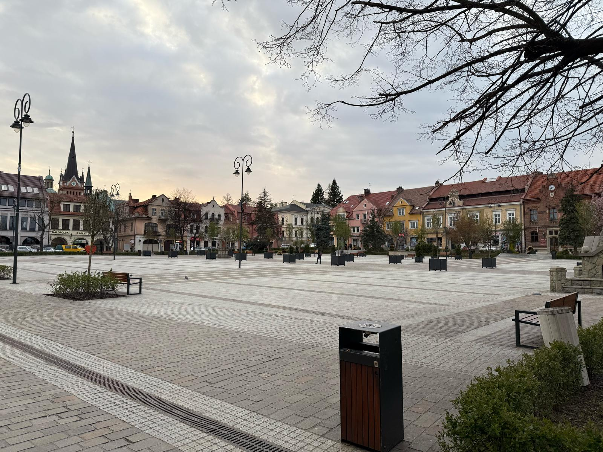
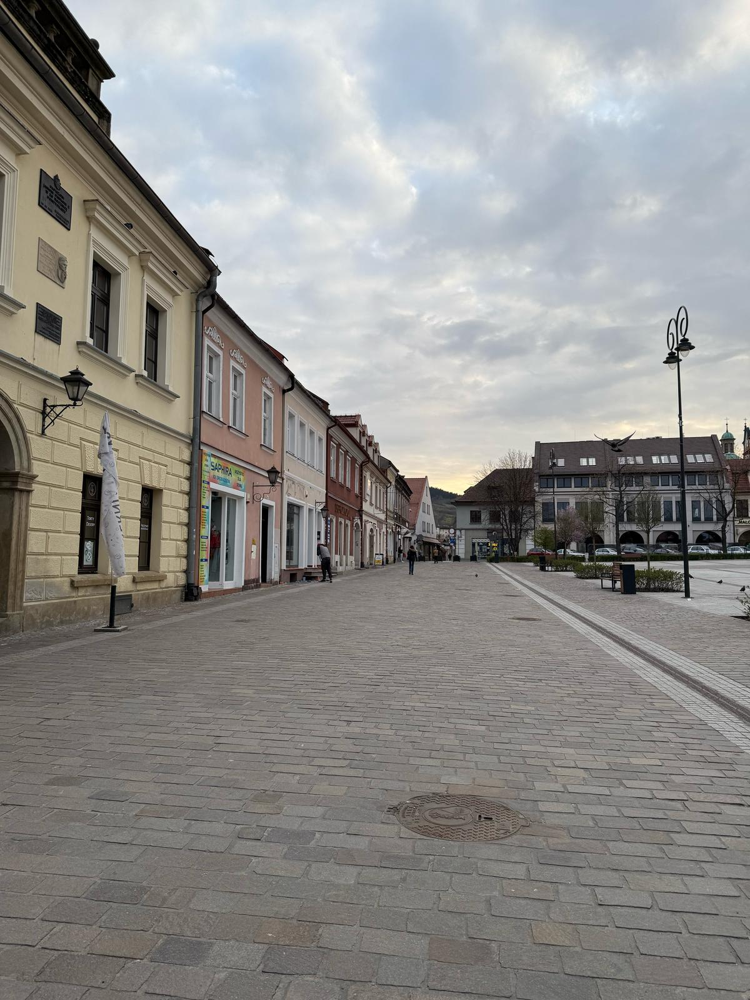

Rynek w Myślenicach to bardzo ważne miejsce w mieście, które pełni zarówno rolę historyczną, jak i kulturalną. Został zaplanowany już w 1458 roku, a jego układ przypomina prostokąt. Wokół rynku rozchodziły się cztery ulice, a w 1784 roku dodano nowy trakt cesarski, zmieniając nieco pierwotny wygląd rynku.
Na rynku znajduje się ratusz, który został zbudowany w latach 1895-1899. Jest to budynek zaprojektowany przez architekta Jana Sas-Zubrzyckiego. Na rynku można również zobaczyć dwie ważne rzeczy: studnię-fontannę „Tereska” oraz pomnik św. Floriana, który pochodzi z XVIII wieku.
W ostatnich latach rynek przeszedł rewitalizację, podczas której dodano nowe elementy, takie jak ławki, kosze na śmieci, stojaki na rowery oraz fontannę miejską. Zmieniono też wygląd zieleni, sadząc drzewa i krzewy, co sprawiło, że rynek stał się bardziej przyjazny i estetyczny.
Rynek w Myślenicach to nie tylko ważne miejsce historyczne, ale także centrum wydarzeń kulturalnych. Co roku odbywa się tam Jarmark Bożonarodzeniowy, na którym można kupić świąteczne potrawy, a także uczestniczyć w różnych atrakcjach, jak występy artystyczne czy spotkanie z Świętym Mikołajem.
Dzięki swojej historii i nowoczesnym elementom, rynek w Myślenicach to miejsce, które łączy przeszłość z teraźniejszością i jest ważnym punktem w mieście.


Powrót do strony głównej...